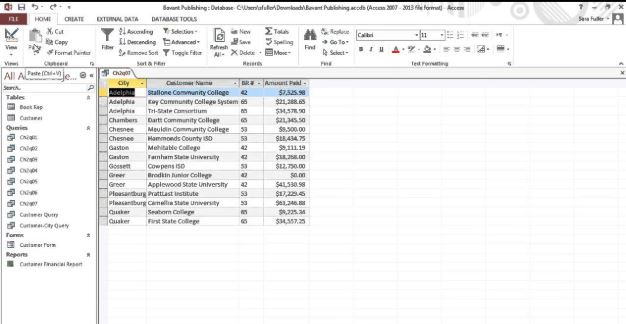
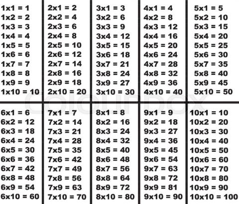
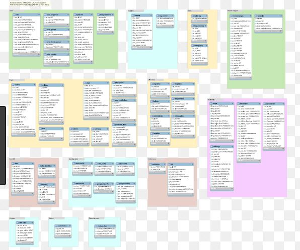
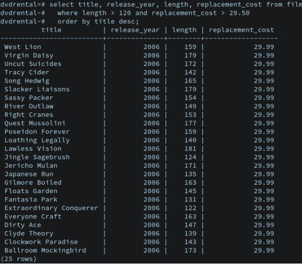
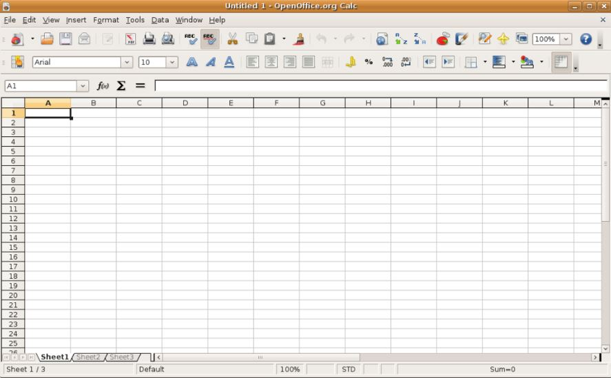

| Name | Surname | Favourite Sauce | Home Town |
|---|---|---|---|
| Ismet | Samsodien | Mustard | Ruyterwacht |
| Naasik | Kamish | Tomato | Hanover Park |
| Fatima | Hendricks | Sweet Chili | Valhalla Park |
| Liam | Hendricks | Chilli & Danya | Grassy Park |
| Rasool | Booley | Hot | Cape Town |
| Taylor | Davids | Mayo | Bridgetown |
| Raasikh | Booley | Tomato | Athlone |
| Khanyiso | Haman | BBQ | Delft |
| Nathier | Manuel | Tomato | Lost City |
| Justin | Creighton | Chilli | Cape Town |
| Keanan | Erasmus | Seafood | Cape Town |
| Tabile | Khume | BBQ | Khayelistha |
| Ebraheem | Seale | Mustard | Bonteheuwel |
| Marlon | Ford | Sweet Chilli | Grassy Park |
| Eliziabeth | Pollard | Moya | Claremont |
| Imraan | Meyer | Mustard | Grassy Park |
| Nur | Brock | Chilli | Kensington |
| Marco | Paulse | Mushroom | Chery |
| Michelle | Fortuin | Sweet chilli | Brakenfell |
| Justice | Ganiza | Thousand Island | Brooklyn |
| Tohier | Dreyer | Sea Food | Chery |
Publishing tables mirror tables that you have identified for monitoring. They contain additional columns, primarily a sequence number and delivery status, which are required by the adapter to detect new rows.
Mathematical tables are lists of numbers showing the results of calculation with varying arguments. Before calculators were cheap and plentiful, people would use such tables to simplify and drastically speed up computation. Tables of logarithms and trigonometric functions were common in math and science textbooks.
The periodic table, or periodic table of elements, is a tabular arrangement of the chemical elements, ordered by their atomic number, electron configuration, and recurring chemical properties, whose structure shows periodic trends.

A database is an organized collection of data, generally stored and accessed electronically from a computer system. Where databases are more complex they are often developed using formal design and modeling techniques.The database management system (DBMS) is the software that interacts with end users, applications, the database itself to capture and analyze the data and provides facilities to administer the database. The sum total of the database, the DBMS and the associated applications can be referred to as a "database system". Often the term "database" is also used to loosely refer to any of the DBMS, the database system or an application associated with the database.
An application is any program, or group of programs, that is designed for the end user. Applications software (also called end-user programs) include such things as database programs, word processors, Web browsers and spreadsheets.

A spreadsheet is an interactive computer application for organization, analysis and storage of data in tabular form.Spreadsheets are developed as computerized simulations of paper accounting worksheets.The program operates on data entered in cells of a table. Each cell may contain either numeric or text data, or the results of formulas that automatically calculate and display a value based on the contents of other cells. A spreadsheet may also refer to one such electronic document.
